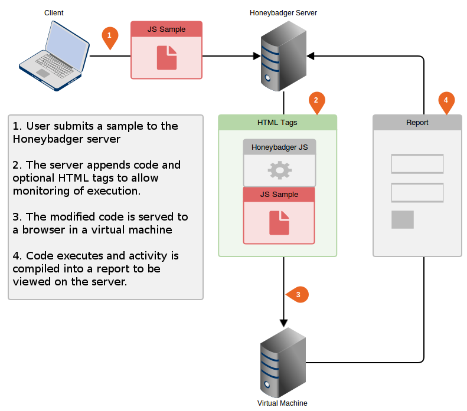

What is honeybadger?
Virtually all exploit kits today will obfuscate the Javascript they serve to evade detection and hinder analysis, making it difficult to determine exactly what a piece of malicious code is designed to do. Honeybadger provides a quick and easy interface for submitting samples and provides a detailed report on the potentially malicious actions they perform. Honeybadger aims to provide accurate results with little to no technical or programming expertise required to analyse the code.
How does Honeybadger work?
Many existing Javascript analysis tools work by executing samples while allowing you to intercept and modify specific functions to return their results. This usually requires a level of programming experience to effectively use the tool and get the desired results. They can also struggle to successfully emulate a browser which can prevent malicious code from being analysed successfully. Honeybadger overcomes these problems by allowing the code to run as intended in a virtual machine, intercepting key functions and DOM changes before compiling all activity into a report. The diagram below shows how Honeybadger performs its analysis:
Setting up Honeybadger
Install Python 2.7.X if you don’t already have it
Download and set up web2py from here and run in public mode with ./web2py
Download the latest copy of Honeybadger from github and extract into the applications folder of your web2py directory.
Configure a virtual machine on a host-only adapter and navigate to http://<host ip>:8000/honeybadger and select analyse
From the host OS navigate to http://localhost:8000/honeybadger and select submit